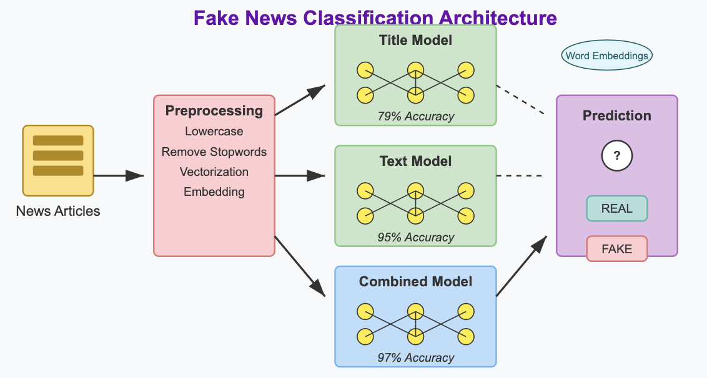
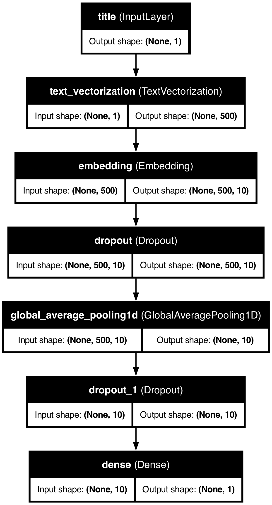
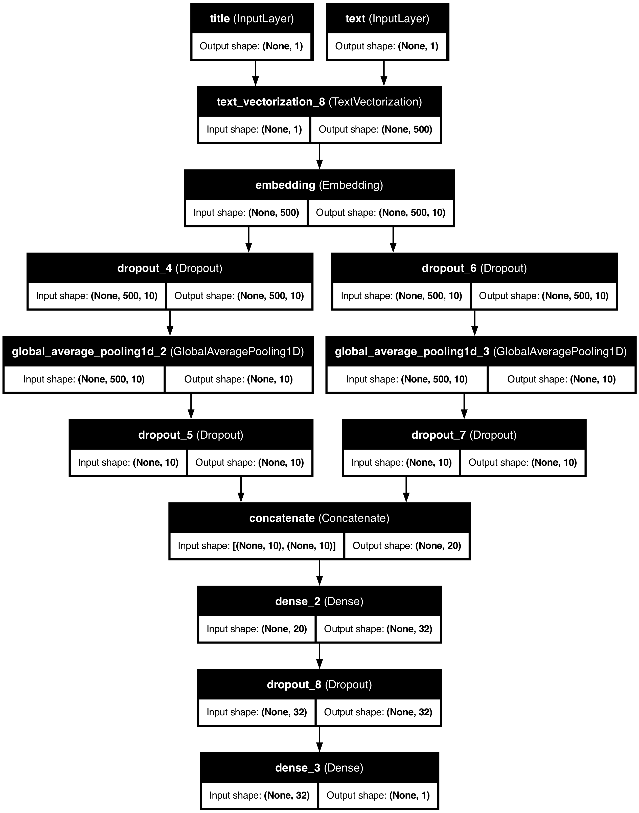
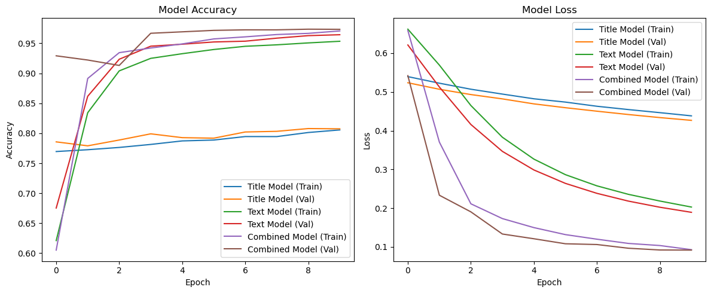

Detecting Fake News with Deep Learning: A Keras-Based Text Classification Approach
Week 10
HW6
Author
Emil Blaignan
Published
March 15, 2025

Introduction
In this project, we’ll attempt to classify news articles as legitimate or fake news. This project uses deep learning techniques in Keras to classify news articles as real or fake based on their titles and content. The model pipeline includes text preprocessing with NLTK, text vectorization, and word embeddings to extract meaningful linguistic patterns. We’ll build and train three neural network architectures: one using only article titles, another using only article text, and a third combining both for improved accuracy.
Preprocessing
In this section, we’ll import and process the text to prepare the data for our models.
Setup & Data Acquisition
First, we’ll need to import the necessary libraries and load our dataset:
# Import necessary librariesimport pandas as pdimport numpy as npimport matplotlib.pyplot as pltimport reimport stringimport tensorflow as tffrom tensorflow import kerasfrom tensorflow.keras import layersfrom tensorflow.keras.layers import TextVectorizationfrom nltk.corpus import stopwordsimport nltk# Download NLTK stopwordsnltk.download('stopwords', quiet =True)# Define our training data URLtrain_url ="https://raw.githubusercontent.com/pic16b-ucla/25W/refs/heads/main/datasets/fake_news_train.csv"# Read the datatrain = pd.read_csv(train_url)# Display the first few rows to understand the datatrain.head()
Unnamed: 0
title
text
fake
0
17366
Merkel: Strong result for Austria's FPO 'big c...
German Chancellor Angela Merkel said on Monday...
0
1
5634
Trump says Pence will lead voter fraud panel
WEST PALM BEACH, Fla.President Donald Trump sa...
0
2
17487
JUST IN: SUSPECTED LEAKER and “Close Confidant...
On December 5, 2017, Circa s Sara Carter warne...
1
3
12217
Thyssenkrupp has offered help to Argentina ove...
Germany s Thyssenkrupp, has offered assistance...
0
4
5535
Trump say appeals court decision on travel ban...
President Donald Trump on Thursday called the ...
0
Our dataset contains article titles, the full text content, and a binary label indicating whether each article is fake news (1) or real news (0).
Data Processing
Next, we’ll create a function, make_dataset(), to process our data by removing stopwords and creating a TensorFlow dataset. The function will do three things:
Change the text to lowercase: .lower().
Remove stopwords (i.e. “the,” “and,” or “but”) from text and title using NLTK
Construct and return a tf.data.Dataset with two inputs (title, text) and one output (fake). The dataset is also batched with size 100.
def make_dataset(df):# Convert to lowercase df['title'] = df['title'].str.lower() df['text'] = df['text'].str.lower()# Get stopwords from NLTK stop_words =set(stopwords.words('english'))# Function to remove stopwordsdef remove_stopwords(text):ifisinstance(text, str): words = text.split() filtered_words = [word for word in words if word notin stop_words]return' '.join(filtered_words)return""# Apply stopword removal df['title'] = df['title'].apply(remove_stopwords) df['text'] = df['text'].apply(remove_stopwords)# Create dataset with multiple inputs titles = df['title'].values texts = df['text'].values labels = df['fake'].values# Create dictionary datasets for multiple inputs dataset = tf.data.Dataset.from_tensor_slices( ({"title": titles, "text": texts}, labels) )return dataset.batch(100) # Batch size of 100# Process the training datadataset = make_dataset(train)
Split Training and Validation Data
Next, we’ll split our data into training and validation sets using a 80/20 split:
# Calculate the size of the training set (80% of the data)train_size =int(0.8*len(train))val_size =len(train) - train_size# Split the datasettrain_dataset = dataset.take(train_size//100) # Divide by batch sizeval_dataset = dataset.skip(train_size//100)# Calculate base ratebase_rate = train['fake'].mean() *100print(f"Base rate of fake news: {base_rate:.2f}%")
Base rate of fake news: 52.30%
The base rate tells us what percentage of our dataset consists of fake news. This gives us a baseline accuracy to compare our models against.
Text Vectorization Layer
Now we’ll create a text vectorization layer that will convert our text data into numerical vectors:
# Preparing text vectorization layer for tf modelsize_vocabulary =2000def standardization(input_data): lowercase = tf.strings.lower(input_data) no_punctuation = tf.strings.regex_replace(lowercase, '[%s]'% re.escape(string.punctuation), '')return no_punctuation # Create a shared vectorization layer for both title and textvectorize_layer = TextVectorization( standardize=standardization, max_tokens=size_vocabulary, # only consider this many words (2000) output_mode='int', output_sequence_length=500) # Create text-only dataset for adaptationtext_dataset = train_dataset.unbatch().map(lambda x, y: x["text"])# Create title-only dataset for adaptationtitle_dataset = train_dataset.unbatch().map(lambda x, y: x["title"])# Combine title and text datasets for adaptationcombined_texts = text_dataset.concatenate(title_dataset)vectorize_layer.adapt(combined_texts)
The text vectorization layer transforms our text data into numerical representations that our neural network can process.
Creating Models
We’ll create three different models (title only, text only, both) to compare their performance:
Title-Only Model
We’ll start with the title-only model, which classifies articles as Real or Fake based on the words in headlines:
# Title-only modeldef create_title_model():# Input layer for title title_input = keras.Input(shape=(1,), dtype=tf.string, name="title")# Vectorize the title title_vectorized = vectorize_layer(title_input)# Embedding layer embedding = layers.Embedding(size_vocabulary, 10, name="embedding")(title_vectorized)# Add dropout for regularization x = layers.Dropout(0.2)(embedding)# Global pooling layer x = layers.GlobalAveragePooling1D()(x)# Add another dropout layer x = layers.Dropout(0.2)(x)# Output layer output = layers.Dense(1, activation="sigmoid")(x)# Create the model model = keras.Model(inputs=title_input, outputs=output, name="title_model")# Compile the model model.compile( loss="binary_crossentropy", optimizer="adam", metrics=["accuracy"] )return model
Let’s create the model and summary:
# Creatd title modeltitle_model = create_title_model()title_model.summary()
# Visualize the modelfrom tensorflow.keras.utils import plot_modelutils.plot_model(title_model, "title_model.png", show_shapes=True, show_layer_names=True)

Text-Only Model
Next, we’ll build and run the text-only model:
# Text-only modeldef create_text_model():# Input layer for text text_input = keras.Input(shape=(1,), dtype=tf.string, name="text")# Vectorize the text text_vectorized = vectorize_layer(text_input)# Embedding layer embedding = layers.Embedding(size_vocabulary, 10, name="embedding")(text_vectorized)# Add dropout for regularization x = layers.Dropout(0.2)(embedding)# Global pooling layer x = layers.GlobalAveragePooling1D()(x)# Add another dropout layer x = layers.Dropout(0.2)(x)# Output layer output = layers.Dense(1, activation="sigmoid")(x)# Create the model model = keras.Model(inputs=text_input, outputs=output, name="text_model")# Compile the model model.compile( loss="binary_crossentropy", optimizer="adam", metrics=["accuracy"] )return model
Let’s create the model and summary:
# Create text modeltext_model = create_text_model()text_model.summary()
# Visualize the modelutils.plot_model(combined_model, "combined_model.png", show_shapes=True, show_layer_names=True)

Training History Visualization
Let’s visualize the training history to compare the performance of our three models:
def plot_history(title_history, text_history, combined_history): plt.figure(figsize=(12, 5))# Accuracy plot plt.subplot(1, 2, 1) plt.plot(title_history.history['accuracy'], label='Title Model (Train)') plt.plot(title_history.history['val_accuracy'], label='Title Model (Val)') plt.plot(text_history.history['accuracy'], label='Text Model (Train)') plt.plot(text_history.history['val_accuracy'], label='Text Model (Val)') plt.plot(combined_history.history['accuracy'], label='Combined Model (Train)') plt.plot(combined_history.history['val_accuracy'], label='Combined Model (Val)') plt.xlabel('Epoch') plt.ylabel('Accuracy') plt.title('Model Accuracy') plt.legend()# Loss plot plt.subplot(1, 2, 2) plt.plot(title_history.history['loss'], label='Title Model (Train)') plt.plot(title_history.history['val_loss'], label='Title Model (Val)') plt.plot(text_history.history['loss'], label='Text Model (Train)') plt.plot(text_history.history['val_loss'], label='Text Model (Val)') plt.plot(combined_history.history['loss'], label='Combined Model (Train)') plt.plot(combined_history.history['val_loss'], label='Combined Model (Val)') plt.xlabel('Epoch') plt.ylabel('Loss') plt.title('Model Loss') plt.legend() plt.tight_layout() plt.savefig('training_history.png') plt.show()# Plot the training historyplot_history(title_history, text_history, combined_history)

Based on the training history, we can observe:
The Combined Model achieves the highest validation accuracy at approximately 97%, exceeding our target accuracy.
The Text Model performs quite well too, reaching around 96% validation accuracy.
The Title Model performs significantly worse, only reaching about 80% accuracy.
This indicates that while article titles provide some signal for fake news detection, the full text contains much more useful information, and using both together delivers the best performance.
Evaluation on Test Data
Let’s evaluate our most performant model on the test dataset:
# Load test datatest_url ="https://raw.githubusercontent.com/pic16b-ucla/25W/refs/heads/main/datasets/fake_news_test.csv"test = pd.read_csv(test_url)# Create test datasettest_dataset = make_dataset(test)# Evaluate model on the test datasetcombined_result = combined_model.evaluate(test_dataset)# Print the resultsprint("Combined Model Test Accuracy: {:.2f}%".format(combined_result[1] *100))
225/225 ━━━━━━━━━━━━━━━━━━━━ 1s 3ms/step - accuracy: 0.9695 - loss: 0.0996
Combined Model Test Accuracy: 96.96%
Embedding Visualization
Now let’s visualize the word embeddings learned by our best model:
import plotly.graph_objects as gofrom sklearn.decomposition import PCA# Get the embedding layer weightsembedding_layer = combined_model.get_layer("embedding")weights = embedding_layer.get_weights()[0]# Get the vocabulary from the vectorization layervocab = vectorize_layer.get_vocabulary()# Use PCA to reduce dimensions for visualization (3D)pca = PCA(n_components=3)embeddings_3d = pca.fit_transform(weights)# Create a DataFrame for plottingdf_embeddings = pd.DataFrame({'word': vocab,'x': embeddings_3d[:, 0],'y': embeddings_3d[:, 1],'z': embeddings_3d[:, 2]})# Filter out padding and out-of-vocabulary termsdf_plot = df_embeddings[~df_embeddings['word'].isin(['', '[UNK]'])].copy()# Compute distance from origin for highlighting interesting wordsdf_plot['distance'] = np.sqrt(df_plot['x']**2+ df_plot['y']**2+ df_plot['z']**2)# Selected words to highlight, including political, news-related and sentiment wordshighlight_words = ['trump', 'clinton', 'hillary', 'obama', 'democrats', 'republicans','fake', 'real', 'true', 'false', 'hoax', 'conspiracy', 'news', 'media','war', 'military', 'government']# Create a new column to determine text visibility and point sizedf_plot['show_label'] = df_plot['word'].isin(highlight_words)df_plot['point_size'] =3# Default sizedf_plot.loc[df_plot['show_label'], 'point_size'] =6# Larger for highlighted words# Create text colors - visible only for highlighted wordstext_colors = ['rgba(0,0,0,1)'if show else'rgba(0,0,0,0)'for show in df_plot['show_label']]# Calculate the range of each axis for better scalingx_range = [df_plot['x'].min(), df_plot['x'].max()]y_range = [df_plot['y'].min(), df_plot['y'].max()]z_range = [df_plot['z'].min(), df_plot['z'].max()]# Calculate axis scaling factors to make the plot more compact# Specifically reduce the y-axis (component 2) rangescale_factor_y =0.5# Reduce y-axis scale by 50%# Create the 3D scatter plotfig = go.Figure(data=[ go.Scatter3d( x=df_plot['x'], y=df_plot['y'] * scale_factor_y, # Scale down component 2 z=df_plot['z'], mode='markers+text', text=df_plot['word'], textposition="top center", textfont=dict( size=10, color=text_colors ), marker=dict( size=df_plot['point_size'], color=df_plot['distance'], colorscale='Viridis', opacity=0.8, ), hoverinfo='text', hovertext=df_plot['word'] )])# Update layout with tighter rangesfig.update_layout( title="3D Word Embedding Visualization for Fake News Classification", width=900, height=700, scene=dict( xaxis=dict( title='PCA Component 1',range=[x_range[0] *1.1, x_range[1] *1.1] # Add small margin ), yaxis=dict( title='PCA Component 2',range=[y_range[0] * scale_factor_y *1.1, y_range[1] * scale_factor_y *1.1] ), zaxis=dict( title='PCA Component 3',range=[z_range[0] *1.1, z_range[1] *1.1] ), aspectmode='manual', # Manual aspect ratio aspectratio=dict(x=1, y=0.5, z=1) # Reduce y-axis aspect ratio ))# Show the plotfig.show()
Analysis of Word Embeddings
Scrolling over the word embeddings we can see some trends. Here are some examples:
Political Polarization: In the embedding space, we can see that “trump” and “clinton” appear in distinct regions while “hilary” and “obama” remain close together. This might suggest that the model has learned different contextual patterns for how these names appear in news articles. This separation likely reflects the polarized nature of political reporting, where certain linguistic patterns are associated with coverage of different political figures.
War: “war” has words surrounding it that naturally seem to be brought up in the same discussions and context such as “targeted,” “campaign,” “missile,” etc.
Media References: The word “media” appears in a different region from specific news outlet names, suggesting that generic references to “the media” might be used differently in fake news (often as a collective entity to criticize) compared to specific outlet citations which might be more common in legitimate reporting.
Conspiracy-Related Terms: Words like “hoax”, “conspiracy” and related terms form their own cluster, indicating the model has learned to associate these concepts with questionable content. This semantic grouping helps the model identify articles that use language patterns typical of conspiracy theories.
Political parties: words like “democrats” and “republicans” are positioned close together as they are likely often discussed together along with words such as “washington” and “administration.”
These embedding patterns help explain why our combined model performs better than either title-only or text-only models. By learning the complex relationships between words in both titles and full text, the model captures rich semantic information about how language is used differently in fake versus real news articles.